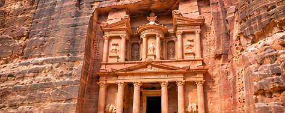
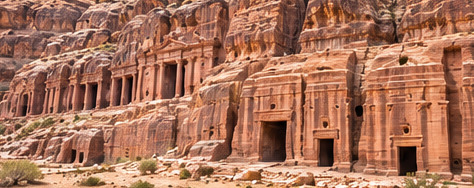
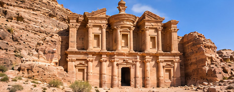
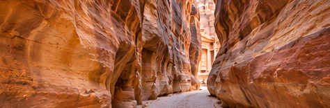
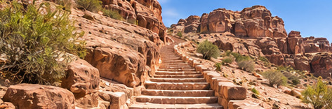
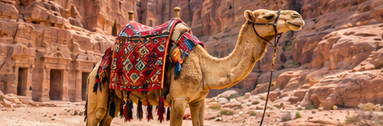

Petra
Through the Siq to the rose-red city.
Places to explore
-

The Treasury
Petra’s most famous facade, carved into the rose-red rock around the 1st century AD, probably as a royal tomb.
-

The Royal Tombs
A row of grand tombs cut into the cliff face, mostly in the 1st century AD. The Urn Tomb was turned into a church in the 440s.
-

The Monastery (Ad Deir)
A vast facade high above the city, probably carved in the mid-1st century AD, with sweeping views from the ridge beside it.
Experiences to try
-

Walk the Siq
Follow the narrow canyon to the Treasury, past channels the Nabataeans cut into the rock to carry water into the city.
-

Hike to the Monastery
Climb about 800 stone steps for a close look at the Monastery and wide views over the mountains.
-

Optional Camel Ride
Take a short ride along the main trail, a classic way to see Petra from a local perspective.
Plan your visit
- Suggested visit
- One to two days. One day covers the main trail and the Monastery.
- Getting there
- About three hours’ drive south of Amman. The entrance and visitor centre are in the town of Wadi Musa.
- What to bring
- Good walking shoes, water and sun protection. The climb to the Monastery is about 800 steps.
The site opens at 6:00, and closing time changes with the season. Camel rides are optional and arranged on site. Entry is included in the Jordan Pass.